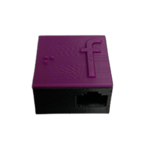
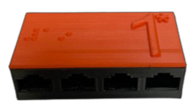

PARTE I - Boas-Vindas
Olá! Seja bem-vindo ao nosso roteiro de uso, um dos elementos essenciais do nosso material didático. Este roteiro é de extrema importância para que tanto o aluno quanto o professor possam compreendê-lo com clareza, a fim de utilizá-lo posteriormente e contribuir para um aprendizado mais eficaz. O roteiro é dividido em várias seções que incluem uma introdução ao material, especificações, requisitos, exemplos e muitas outras informações. É importante ressaltar que este roteiro de uso se destina a professores e alunos. Se algum aluno tiver alguma dúvida, recomendamos que consulte o professor.
PARTE II - Requisitos
Antes de prosseguir, é necessário que você atenda a três requisitos, sendo um deles opcional:
1. O primeiro requisito é um leitor de tela, que será utilizado no material destinado principalmente à leitura da tabela auxiliar. A escolha do leitor de tela fica a critério do aluno, podendo ser Jaws, NVDA, Virtual Vision, VoiceOver, entre outros... As configurações de voz desse leitor de tela também estão à escolha do aluno.
2. O segundo requisito, embora seja opcional, é recomendado. Consiste em que o professor forneça ao aluno usuário do material um conhecimento teórico básico, a fim de que ele adquira uma compreensão prévia sobre o assunto. A decisão de seguir tal requisito fica a critério do professor e pode ser incorporada de acordo com sua metodologia de ensino.
3. O terceiro requisito é que tanto o aluno quanto o professor encarregado de orientar o aluno devem ter acesso ao Excel®. Isso garantirá um desempenho melhor e permitirá seguir a descrição da Tabela Auxiliar com precisão.
PARTE III - O Material
Este material inclui encaixes de RJ45, cabos de borracha e peças 3-D, montados em uma base LEGO® para representar os elementos de cada diagrama. Além disso, cada diagrama possui uma tabela auxiliar para complementar as informações por meio de leitor de tela. A seguir, ainda nesta seção, é possível ver as características gerais do material.
A base é composta por uma estrutura estilo LEGO®, com duas partes dobráveis que se unem, formando um único tablado. Sobre ele, são encaixadas as peças.
As peças possuem encaixe inspirado no padrão RJ45. Assim, toda peça possui entradas para esse padrão, porém os fios do RJ45 são de silicone, o que permite melhor manuseio. Tais peças, são identificadas por siglas e seu correspondente em braile, e possuem o desenho necessário para o encaixe no tabuleiro.
PARTE IV - Orientação e Características das Peças - Específico do Diagrama de Atividades
Nesta parte, iremos autodescrever cada peça, logo, será possível conhecer as características de cada peça do diagrama de atividades e sua funcionalidade. As peças deste material diferem entre si em cor e formato, portanto, para uma melhor compreensão e diferenciação, é de extrema importância prestar atenção nas informações fornecidas sobre cada peça e suas características próprias.
| Peça | Descrição |
|---|---|

|
Base LEGO®:Esta é uma base LEGO®. Nosso material didático inclui quatro unidades dessa base. Cada base tem 25 centímetros de largura por 25 centímetros de comprimento, de base quadricular e é de cor branca. Na parte inferior da base, há uma placa de MDF em um tom de cor marrom/amarelado. Além disso, na parte inferior do MDF, existem duas unidades de dobradiça coladas, que servem para unir uma base LEGO® à outra e também possuem algumas semiesferas para que as bases LEGO® fiquem em uma superfície plana. A base LEGO® é usada para encaixar as peças do nosso material didático, que representam elementos num diagrama de atividades. Ela permite que você construa e explore diferentes conceitos de forma tátil e interativa. As peças se encaixam na base LEGO®, facilitando a compreensão das informações e o aprendizado. |

|
Raias:Esta peça representa as raias no diagrama de atividades, em um diagrama de atividades as raias são usadas para mostrar quem ou o que está realizando as atividades em um processo. Sua peça possui uma cor preta e tem o formato de um paralelepípedo fino e longo, que se encaixará entre os pinos da base LEGO® para demarcar as raias. No material didático, essa representação de raia está disponível em duas medidas diferentes: 20 centímetros e 11 centímetros. |
Conector:Esta peça representa as setas no diagrama de atividades, em um diagrama de atividades as setas são usadas para representar transições ou fluxos entre as atividades. Esta peça é o conector e deve ser utilizada em conjunto com a presilha de transição de processo. Sua peça trata-se de um cabo de borracha na cor preta que possui dois conectores RJ45, um em cada extremidade. No material didático, este cabo está disponível em três medidas diferentes: 64 centímetros, 30 centímetros e 22 centímetros, sendo utilizado para interligar fluxos de atividade mais longos e mais curtos. |
|
Presilha de Transição de Processo:Esta peça representa o sentido das setas no diagrama de atividades. Esta peça é a presilha de transição de processo e dever ser utilizada em conjunto com o conector. Sua peça possui uma parte inferior com um encaixe projetado para se encaixar ao cabo de borracha do conector, sendo essa parte inferior na cor preta. Na parte superior da presilha encontra-se um estereótipo de uma seta, a qual é usada para indicar o sentido do fluxo de atividade, e essa parte superior é de cor verde. |
|

|
Início:Esta peça representa o início no diagrama de atividades, em um diagrama de atividades o início representa o ponto de partida do processo ou operação. Sua peça possui uma parte inferior que tem um encaixe projetado para se encaixar na base LEGO®, e essa parte inferior é de cor preta. A peça possui base quadricular e possui quatro entradas para conectores RJ45, com uma entrada em cada lado. Na parte superior da peça, há identificações táteis na cor verde. No lado direito, há uma letra "i", e no lado esquerdo, há a mesma letra "i" em braile. |
|  |
Fim:Esta peça representa o fim no diagrama de atividades, em um diagrama de atividades o fim representa a conclusão de um processo ou operação. Sua peça possui uma parte inferior que tem um encaixe projetado para se encaixar na base LEGO®, e essa parte inferior é de cor preta. A peça possui base quadricular e possui quatro entradas para conectores RJ45, com uma entrada em cada lado. Na parte superior da peça, há identificações táteis na cor roxa. No lado direito, há uma letra "f", e no lado esquerdo, há a mesma letra "f" em braile. |
Ação:Esta peça representa as ações no diagrama de atividades, em um diagrama de atividades a ação representa as funcionalidades dentro da operação. Sua peça possui uma parte inferior que tem um encaixe projetado para se encaixar na base LEGO®, e essa parte inferior é de cor preta. A peça possui base retangular, e em ambos os lados maiores, cada um desses lados possui quatro entradas para conectores RJ45. Na parte superior da peça, há identificações táteis na cor laranja. No lado direito, há um número que pode variar de 1 a 20, e no lado esquerdo, há o mesmo número em braile. |
|
|  |
Ação de Chamada de Caso de Uso:Esta peça representa as ações de chamada de caso de uso no diagrama de atividades, em um diagrama de atividades a ação de chamada de caso de uso representa a execução de um caso de uso. Sua peça possui uma parte inferior que tem um encaixe projetado para se encaixar na base LEGO®, e essa parte inferior é de cor preta. A peça possui base retangular, e em ambos os lados maiores, cada um desses lados possui quatro entradas para conectores RJ45. Na parte superior da peça, há identificações táteis na cor laranja. No lado direito, há um número que varia de 1 a 5, sempre acompanhado de um asterisco (utilizado para indicar a chamada de caso de uso). No lado esquerdo, há o mesmo número em braile, também acompanhado de um asterisco. |
Ramificação:Esta peça representa as ramificações no diagrama de atividades, em um diagrama de atividades a ramificação representa as condições dentro da operação. Sua peça possui uma parte inferior que tem um encaixe projetado para se encaixar na base LEGO®, e essa parte inferior é de cor preta. A peça possui base octogonal, e para tornar isso mais claro, você pode imaginar como uma bússola. Os conectores RJ45 estão localizados nas direções correspondentes aos pontos cardeais: norte, sul, leste e oeste. Imagine os conectores distribuídos como se fossem os pontos de uma bússola, facilitando a identificação e conexão. Em síntese, a peça possui 8 lados, sendo que 4 deles têm uma entrada para conector RJ45. Isso significa que, ao passar a mão ao longo dos lados sequencialmente, um de cada vez, você poderá identificar a seguinte sequência: encaixa, não encaixa, encaixa, não encaixa. Na parte superior da peça, há identificações táteis na cor azul. No lado direito, encontra-se a letra "r" acompanhada por um número que pode variar de 1 a 5. No lado esquerdo, há a mesma letra acompanhada pelo mesmo número em braile. |
|

|
Merge:Esta peça representa os merges no diagrama de atividades, em um diagrama de atividades a merge têm o propósito de unir fluxos de atividades após a ocorrência de uma condição específica. Sua peça possui uma parte inferior que tem um encaixe projetado para se encaixar na base LEGO®, e essa parte inferior é de cor preta. A peça possui base octogonal, e para tornar isso mais claro, você pode imaginar como uma bússola. Os conectores RJ45 estão localizados nas direções correspondentes aos pontos cardeais: norte, sul, leste e oeste. Imagine os conectores distribuídos como se fossem os pontos de uma bússola, facilitando a identificação e conexão. Em síntese, a peça possui 8 lados, sendo que 4 deles têm uma entrada para conector RJ4-5. Isso significa que, ao passar a mão ao longo dos lados sequencialmente, um de cada vez, você poderá identificar a seguinte sequência: encaixa, não encaixa, encaixa, não encaixa. Na parte superior da peça, há identificações táteis na cor ciano. No lado direito, encontra-se a letra "m" acompanhada por um número que pode variar de 1 a 5. No lado esquerdo, há a mesma letra acompanhada pelo mesmo número em braile. |
Bifurcação:Esta peça representa as bifurcações no diagrama de atividades, em um diagrama de atividades a bifurcação cria uma transição de entrada e estabelecem dois ou mais fluxos de controle paralelos, cada um executado de forma independente e simultânea aos demais. Sua peça possui uma parte inferior que tem um encaixe projetado para se encaixar na base LEGO®, e essa parte inferior é de cor preta. A peça possui base semidecagonal, para tornar isso mais claro. Os encaixes de conectores RJ45 estão localizados na parte mais larga desta peça, onde se encontram três entradas para conectores RJ45. Na parte mais estreita desta peça, encontra-se uma entrada para conector RJ45. Na parte superior da peça, há identificações táteis na cor dourada/amarronzada. No lado direito, encontra-se a letra "b" acompanhada por um número que pode variar de 1 a 5. No lado esquerdo, há a mesma letra acompanhada pelo mesmo número em braile. |
|

|
Junção:Esta peça representa as junções no diagrama de atividades, em um diagrama de atividades a junção serve para consolidar os fluxos de atividades que ocorrem simultaneamente em uma única ação, reunindo esses fluxos em um ponto comum. Sua peça possui uma parte inferior que tem um encaixe projetado para se encaixar na base LEGO®, e essa parte inferior é de cor preta. A peça possui base semidecagonal, para tornar isso mais claro. Os encaixes de conectores RJ45 estão localizados na parte mais larga desta peça, onde se encontram três entradas para conectores RJ45. Na parte mais estreita desta peça, encontra-se uma entrada para conector RJ45. Na parte superior da peça, há identificações táteis na cor amarela. No lado direito, encontra-se a letra "j" acompanhada por um número que pode variar de 1 a 5. No lado esquerdo, há a mesma letra acompanhada pelo mesmo número em braile. |
Após o conhecimento das características de cada peça, é de extrema importância que o professor oriente o aluno neste processo de familiarização, permitindo que o aluno possa reconhecer e memorizar as características de cada peça. Portanto, é fundamental que o professor possa oferecer assistência nesse processo.
PARTE V - Orientação e Características das Peças - Específico do Diagrama de Casos de Uso
Nesta parte, iremos autodescrever cada peça, logo, será possível conhecer as características de cada peça do diagrama de casos de uso e sua funcionalidade. As peças deste material diferem entre si em cor e formato, portanto, para uma melhor compreensão e diferenciação, é de extrema importância prestar atenção nas informações fornecidas sobre cada peça e suas características próprias.
| Peça | Descrição |
|---|---|
|
|
Base LEGO®:Esta é uma base LEGO®. Nosso material didático inclui quatro unidades dessa base. Cada base tem 25 centímetros de largura por 25 centímetros de comprimento, de base quadricular e é de cor branca. Na parte inferior da base, há uma placa de MDF em um tom de cor marrom/amarelado. Além disso, na parte inferior do MDF, existem duas unidades de dobradiça coladas, que servem para unir uma base LEGO® à outra e também possuem algumas semiesferas para que as bases LEGO® fiquem em uma superfície plana. A base LEGO® é usada para encaixar as peças do nosso material didático, que representam elementos num diagrama de atividades. Ela permite que você construa e explore diferentes conceitos de forma tátil e interativa. As peças se encaixam na base LEGO®, facilitando a compreensão das informações e o aprendizado. |
Conector:Esta peça representa as interações entre casos de uso e atores no diagrama de casos de uso, em um diagrama de casos de uso as interações são usadas para representar como atores e casos se envolvem em um sistema. Esta peça é o conector e deve ser utilizada em conjunto com a presilha de extend, a presilha de include ou a presilha de herança. Sua peça trata-se de um cabo de borracha na cor preta que possui dois conectores RJ45, um em cada extremidade. No material didático, este cabo está disponível em três medidas diferentes: 64 centímetros, 30 centímetros e 22 centímetros, sendo utilizado para interligar fluxos de atividade mais longos e mais curtos. |
|
|
|
Presilha de Extend:Esta peça representa a relação entre casos de uso e atores de extensão no diagrama de casos de uso. Esta peça é a presilha de extend e deve ser utilizada em conjunto com o conector. Sua peça possui uma parte inferior com um encaixe projetado para se encaixar ao cabo de borracha do conector, sendo essa parte inferior na cor preta. Na parte superior da presilha encontra-se um estereótipo de um círculo, a qual é usada para indicar a extensão, e essa parte superior é de cor amarela. |
|
|
Presilha de Include:Esta peça representa a relação entre casos de uso e atores de inclusão no diagrama de casos de uso. Esta peça é a presilha de include e deve ser utilizada em conjunto com o conector. Sua peça possui uma parte inferior com um encaixe projetado para se encaixar ao cabo de borracha do conector, sendo essa parte inferior na cor preta. Na parte superior da presilha encontra-se um estereótipo de um retângulo, a qual é usada para indicar a inclusão, e essa parte superior é de cor azul. |
Presilha de Herança:Esta peça representa a relação entre casos de uso e atores de herança no diagrama de casos de uso. Esta peça é a presilha de herança e deve ser utilizada em conjunto com o conector. Sua peça possui uma parte inferior com um encaixe projetado para se encaixar ao cabo de borracha do conector, sendo essa parte inferior na cor preta. Na parte superior da presilha encontra-se um estereótipo de uma seta, a qual é usada para indicar a herança, e essa parte superior é de cor verde. |
|
Ator:Esta peça representa os atores no diagrama de casos de uso, em um diagrama de casos de uso o ator representa entidades externas, como usuários, sistemas externos ou dispositivos, desempenhando papéis específicos nas interações. Sua peça possui uma parte inferior que tem um encaixe projetado para se encaixar na base LEGO®, e essa parte inferior é de cor preta. A peça possui base retangular, e em ambos os lados maiores, cada um desses lados possui quatro entradas para conectores RJ45. Na parte superior da peça, há identificações táteis na cor dourada/amarronzada. No lado direito, há uma letra que pode variar de A a G, e no lado esquerdo, há a mesma letra em braile. |
|
Caso de Uso:Esta peça representa os casos de uso no diagrama de casos de uso, em um diagrama de casos de uso o caso representa as funcionalidades ou ações que um sistema oferece aos atores. Sua peça possui uma parte inferior que tem um encaixe projetado para se encaixar na base LEGO®, e essa parte inferior é de cor preta. A peça possui base retangular, e em ambos os lados maiores, cada um desses lados possui quatro entradas para conectores RJ45. Na parte superior da peça, há identificações táteis na cor laranja. No lado direito, há um número que pode variar de 1 a 20, e no lado esquerdo, há o mesmo número em braile. |
Após o conhecimento das características de cada peça, é de extrema importância que o professor oriente o aluno neste processo de familiarização, permitindo que o aluno possa reconhecer e memorizar as características de cada peça. Portanto, é fundamental que o professor possa oferecer assistência nesse processo.
PARTE VI - Orientação e Características das Peças - Específico do Diagrama de Classes
Nesta parte, iremos autodescrever cada peça, logo, será possível conhecer as características de cada peça do diagrama de classes e sua funcionalidade. As peças deste material diferem entre si em cor e formato, portanto, para uma melhor compreensão e diferenciação, é de extrema importância prestar atenção nas informações fornecidas sobre cada peça e suas características próprias.
| Peça | Descrição |
|---|---|
|
|
Base LEGO®:Esta é uma base LEGO®. Nosso material didático inclui quatro unidades dessa base. Cada base tem 25 centímetros de largura por 25 centímetros de comprimento, de base quadricular e é de cor branca. Na parte inferior da base, há uma placa de MDF em um tom de cor marrom/amarelado. Além disso, na parte inferior do MDF, existem duas unidades de dobradiça coladas, que servem para unir uma base LEGO® à outra e também possuem algumas semiesferas para que as bases LEGO® fiquem em uma superfície plana. A base LEGO® é usada para encaixar as peças do nosso material didático, que representam elementos num diagrama de atividades. Ela permite que você construa e explore diferentes conceitos de forma tátil e interativa. As peças se encaixam na base LEGO®, facilitando a compreensão das informações e o aprendizado. |
Conector:Esta peça representa as interações no diagrama de classes, em um diagrama de classes as interações são usadas para representar como as classes se interagem e se relacionam em um sistema. Esta peça é o conector e deve ser utilizada em conjunto com a presilha de multiplicidade “0, 1 e *” ou em conjunto com a presilha de agregação, composição ou herança. Sua peça trata-se de um cabo de borracha na cor preta que possui dois conectores RJ45, um em cada extremidade. No material didático, este cabo está disponível em três medidas diferentes: 64 centímetros, 30 centímetros e 22 centímetros, sendo utilizado para interligar fluxos de atividade mais longos e mais curtos. |
|
|
|
Presilha de Agregração:Esta peça representa o relacionamento entre classes de agregação no diagrama de classes. Esta peça é a presilha de agregação e deve ser utilizada em conjunto com o conector. Sua peça possui uma parte inferior com um encaixe projetado para se encaixar ao cabo de borracha do conector, sendo essa parte inferior na cor preta. Na parte superior da presilha encontra-se um estereótipo de um círculo, a qual é usada para indicar a agregação, e essa parte superior é de cor amarela. |
|
|
Presilha de Composição:Esta peça representa o relacionamento entre classes de composição no diagrama de classes. Esta peça é a presilha de composição e deve ser utilizada em conjunto com o conector. Sua peça possui uma parte inferior com um encaixe projetado para se encaixar ao cabo de borracha do conector, sendo essa parte inferior na cor preta. Na parte superior da presilha encontra-se um estereótipo de um retângulo, a qual é usada para indicar a composição, e essa parte superior é de cor azul. |
Presilha de Herança:Esta peça representa o relacionamento entre classes de herança no diagrama de classes. Esta peça é a presilha de herança e deve ser utilizada em conjunto com o conector. Sua peça possui uma parte inferior com um encaixe projetado para se encaixar ao cabo de borracha do conector, sendo essa parte inferior na cor preta. Na parte superior da presilha encontra-se um estereótipo de uma seta, a qual é usada para indicar a herança, e essa parte superior é de cor verde. |
|
Presilha de Multiplicidade “0”:Esta peça representa a multiplicidade “0” entre as instâncias das classes no diagrama de classes. Esta peça é a presilha de multiplicidade “0” e deve ser utilizada em conjunto com o conector. Sua peça possui uma parte inferior com um encaixe projetado para se encaixar ao cabo de borracha do conector, sendo essa parte inferior na cor preta. Na parte superior da presilha encontra-se o texto “0” e, abaixo, o mesmo texto em braile, a qual é usado para indicar a multiplicidade, e essa parte superior é de cor verde. |
|
Presilha de Multiplicidade “1”:Esta peça representa a multiplicidade “1” entre as instâncias das classes no diagrama de classes. Esta peça é a presilha de multiplicidade “1” e deve ser utilizada em conjunto com o conector. Sua peça possui uma parte inferior com um encaixe projetado para se encaixar ao cabo de borracha do conector, sendo essa parte inferior na cor preta. Na parte superior da presilha encontra-se o texto “1” e, abaixo, o mesmo texto em braile, a qual é usado para indicar a multiplicidade, e essa parte superior é de cor amarela. |
|
Presilha de Multiplicidade “*”:Esta peça representa a multiplicidade “*” entre as instâncias das classes no diagrama de classes. Esta peça é a presilha de multiplicidade “*” e deve ser utilizada em conjunto com o conector. Sua peça possui uma parte inferior com um encaixe projetado para se encaixar ao cabo de borracha do conector, sendo essa parte inferior na cor preta. Na parte superior da presilha encontra-se o texto “*” e, abaixo, o mesmo texto em braile, a qual é usado para indicar a multiplicidade, e essa parte superior é de cor azul. |
|
Classe:Esta peça representa as classes no diagrama de classes, em um diagrama de classes a classe representa um tipo de objeto no sistema, incluindo seus atributos e métodos. Sua peça possui uma parte inferior que tem um encaixe projetado para se encaixar na base LEGO®, e essa parte inferior é de cor preta. A peça possui base retangular, e em ambos os lados maiores, cada um desses lados possui quatro entradas para conectores RJ45. Na parte superior da peça, há identificações táteis na cor laranja. No lado direito, há um número que pode variar de 1 a 20, e no lado esquerdo, há o mesmo número em braile. |
|
Classe Abstrata:Esta peça representa as classes abstratas no diagrama de classes, em um diagrama de classes a classe abstrata define métodos que devem ser implementados por suas subclasses. Sua peça possui uma parte inferior que tem um encaixe projetado para se encaixar na base LEGO®, e essa parte inferior é de cor preta. A peça possui base retangular, e em ambos os lados maiores, cada um desses lados possui quatro entradas para conectores RJ45. Na parte superior da peça, há identificações táteis na cor dourada/amarronzada. No lado direito, há uma letra que pode variar de A a G, e no lado esquerdo, há a mesma letra em braile. |
|
Classe Associativa:Esta peça representa as classes associativas no diagrama de classes, em um diagrama de classes a classe associativa representa objetos que serão instanciados a partir da relação de dois outros objetos. Essa classe intermediária armazena informações adicionais sobre a associação e pode ter seus próprios atributos e métodos. Sua peça possui uma parte inferior que tem um encaixe projetado para se encaixar na base LEGO®, e essa parte inferior é de cor preta. A peça possui base retangular, e em ambos os lados maiores, cada um desses lados possui quatro entradas para conectores RJ45. Na parte superior da peça, há identificações táteis na cor laranja. No lado direito, há um número que varia de 1 a 5, sempre acompanhado de um asterisco (utilizado para indicar a classe associativa). No lado esquerdo, há o mesmo número em braile, também acompanhado de um asterisco. |
Após o conhecimento das características de cada peça, é de extrema importância que o professor oriente o aluno neste processo de familiarização, permitindo que o aluno possa reconhecer e memorizar as características de cada peça. Portanto, é fundamental que o professor possa oferecer assistência nesse processo.
PARTE VII - Orientação e Características das Peças - Específico do Modelo Relacional de Dados
Nesta parte, iremos autodescrever cada peça, logo, será possível conhecer as características de cada peça da modelagem relacional de dados e sua funcionalidade. As peças deste material diferem entre si em cor e formato, portanto, para uma melhor compreensão e diferenciação, é de extrema importância prestar atenção nas informações fornecidas sobre cada peça e suas características próprias.
| Peça | Descrição |
|---|---|
|
|
Base LEGO®:Esta é uma base LEGO®. Nosso material didático inclui quatro unidades dessa base. Cada base tem 25 centímetros de largura por 25 centímetros de comprimento, de base quadricular e é de cor branca. Na parte inferior da base, há uma placa de MDF em um tom de cor marrom/amarelado. Além disso, na parte inferior do MDF, existem duas unidades de dobradiça coladas, que servem para unir uma base LEGO® à outra e também possuem algumas semiesferas para que as bases LEGO® fiquem em uma superfície plana. A base LEGO® é usada para encaixar as peças do nosso material didático, que representam elementos num diagrama de atividades. Ela permite que você construa e explore diferentes conceitos de forma tátil e interativa. As peças se encaixam na base LEGO®, facilitando a compreensão das informações e o aprendizado. |
Conector:Esta peça representa o relacionamento entre tabelas da modelagem relacional de dados, na modelagem relacional de dados os relacionamentos são conexões que estabelecem associações entre diferentes tabelas em um banco de dados. Esta peça é o conector e deve ser utilizada em conjunto com a presilha de cardinalidade “0, 1 e n”. Sua peça trata-se de um cabo de borracha na cor preta que possui dois conectores RJ45, um em cada extremidade. No material didático, este cabo está disponível em três medidas diferentes: 64 centímetros, 30 centímetros e 22 centímetros, sendo utilizado para interligar fluxos de atividade mais longos e mais curtos. |
|
Presilha de Cardinalidade “0”:Esta peça representa a cardinalidade “0” entre as tabelas na modelagem relacional de dados. Esta peça é a presilha de cardinalidade “0” e deve ser utilizada em conjunto com o conector. Sua peça possui uma parte inferior com um encaixe projetado para se encaixar ao cabo de borracha do conector, sendo essa parte inferior na cor preta. Na parte superior da presilha encontra-se o texto “0” e, abaixo, o mesmo texto em braile, a qual é usado para indicar a cardinalidade, e essa parte superior é de cor verde. |
|
Presilha de Cardinalidade “1”:Esta peça representa a cardinalidade “1” entre as tabelas na modelagem relacional de dados. Esta peça é a presilha de cardinalidade “1” e deve ser utilizada em conjunto com o conector. Sua peça possui uma parte inferior com um encaixe projetado para se encaixar ao cabo de borracha do conector, sendo essa parte inferior na cor preta. Na parte superior da presilha encontra-se o texto “1” e, abaixo, o mesmo texto em braile, a qual é usado para indicar a cardinalidade, e essa parte superior é de cor amarela. |
|
Presilha de Cardinalidade “n”:Esta peça representa a cardinalidade “n” entre as tabelas na modelagem relacional de dados. Esta peça é a presilha de cardinalidade “n” e deve ser utilizada em conjunto com o conector. Sua peça possui uma parte inferior com um encaixe projetado para se encaixar ao cabo de borracha do conector, sendo essa parte inferior na cor preta. Na parte superior da presilha encontra-se o texto “n” e, abaixo, o mesmo texto em braile, a qual é usado para indicar a cardinalidade, e essa parte superior é de cor azul. |
|
Tabela (entidade):Esta peça representa as tabelas na modelagem relacional de dados, na modelagem relacional de dados a tabela representa entidades que armazenam informações Sua peça possui uma parte inferior que tem um encaixe projetado para se encaixar na base LEGO®, e essa parte inferior é de cor preta. A peça possui base retangular, e em ambos os lados maiores, cada um desses lados possui quatro entradas para conectores RJ45. Na parte superior da peça, há identificações táteis na cor laranja. No lado direito, há um número que pode variar de 1 a 20, e no lado esquerdo, há o mesmo número em braile. |
Após o conhecimento das características de cada peça, é de extrema importância que o professor oriente o aluno neste processo de familiarização, permitindo que o aluno possa reconhecer e memorizar as características de cada peça. Portanto, é fundamental que o professor possa oferecer assistência nesse processo.
PARTE VIII - Como se Utilizar
Em construção...
PARTE IX - Tabela Auxiliar - Específico do Diagrama de Atividades
É essencial que, durante a utilização da tabela auxiliar, seja utilizado um leitor de tela. A utilização da tabela auxiliar deve ser feita através das teclas adicionais do teclado, de maneira informal, as setinhas. A tabela auxiliar possui diversas minitabelas, sendo que cada minitabela representa uma peça que tem uma funcionalidade no diagrama de atividades. A tabela maior, na cor laranja, representa as ações que também inclui as ações de chamada de caso de uso. As tabelas de tamanho médio representam ramificações e bifurcações, nas cores azul e dourada/amarronzada, respectivamente. As tabelas pequenas representam os merges e as junções, nas cores ciano e amarelo, respectivamente. Cabe ressaltar que a tabela não possui o início e o fim, uma vez que o próprio nome se autoidentifica. No entanto, em todo diagrama de atividades, deve haver pelo menos um fim dentro de uma associação. Uma última observação nesta introdução, é que as minitabelas são separadas por uma célula em branco.
Falando detalhadamente sobre os conteúdos que cada tabela possui e quais são suas funcionalidades.
A tabela de ações, que inclui as ações de chamada de caso de uso, possui quatro colunas: "A", "B", "C" e "D". A coluna "A" é responsável por armazenar o protótipo. No protótipo, são descritas as identificações das peças, abrangendo as ações do protótipo de número 1 a 20, as cinco últimas linhas da coluna “A” abrangem o protótipo 1* a 5*, que indica as ações de chamada de caso de uso. Ainda nessa tabela, a coluna "B", que indica o nome, é responsável por armazenar o nome da ação, ou seja, qual atividade ela está executando. A coluna "C" indica a raia à qual a ação pertence. Por fim, a coluna "D" indica a associação, sendo responsável por armazenar o protótipo da próxima atividade a ser executada.
A tabela de ramificações possui duas colunas: "F" e "G". A coluna "F" é responsável por armazenar o protótipo. No protótipo, são descritas as identificações das peças, abrangendo as ramificações do protótipo de R1 a R6. Já a coluna "G", que indica as condições, é responsável por armazenar a condição, juntamente com o protótipo da próxima atividade a ser executada, que deve ser citado entre parênteses. Havendo mais de uma condição, deve ser separado por ponto e vírgula (';').
A tabela de bifurcações possui duas colunas: "F" e "G". A coluna "F" é responsável por armazenar o protótipo. No protótipo, são descritas as identificações das peças, abrangendo as bifurcações do protótipo de B1 a B3. Já a coluna "G", que indica as associações, é responsável por armazenar o nome da próxima atividade a ser executada, juntamente com o protótipo da próxima atividade a ser executada, que deve ser citado entre parênteses. Havendo mais de uma associação, deve ser separado por ponto e vírgula (';'). Cabe ressaltar que a tabela de bifurcação se encontra logo abaixo da tabela de ramificações.
A tabela de merges possui duas colunas: "I" e "J". A coluna "I" é responsável por armazenar o protótipo. No protótipo, são descritas as identificações das peças, abrangendo os merges do protótipo de M1 a M6. Já a coluna "J", que indica as associações, é responsável por armazenar o nome da próxima atividade a ser executada, juntamente com o protótipo da próxima atividade a ser executada, que deve ser citado entre parênteses. Havendo mais de uma associação, deve ser separado por ponto e vírgula (';').
A tabela de junções possui duas colunas: "I" e "J". A coluna "I" é responsável por armazenar o protótipo. No protótipo, são descritas as identificações das peças, abrangendo as junções do protótipo de J1 a J3. Já a coluna "J", que indica as associações, é responsável por armazenar o nome da próxima atividade a ser executada, juntamente com o protótipo da próxima atividade a ser executada, que deve ser citado entre parênteses. Havendo mais de uma associação, deve ser separado por ponto e vírgula (';'). Cabe ressaltar que a tabela de junções se encontra logo abaixo da tabela de merges.
Apesar dessas tabelas possuir um funcionamento semelhante umas às outras, suas funcionalidades são significativamente diferentes no diagrama de atividades. Logo, é destacado novamente a importância do conhecimento prévio mencionado no início do roteiro de uso. Por se tratar de uma parte relativamente difícil de se entender o funcionamento da tabela, fica sob a responsabilidade do docente auxiliar o discente. Veja na Figura 12 a seguir um exemplo da tabela auxiliar sendo utilizada na prática.

PARTE X - Tabela Auxiliar - Específico do Diagrama de Casos de Uso
É essencial que, durante a utilização da tabela auxiliar, seja utilizado um leitor de tela. A utilização da tabela auxiliar deve ser feita através das teclas adicionais do teclado, de maneira informal, as setinhas. A tabela auxiliar possui duas minitabelas, sendo que uma delas representa os casos de uso e a outra representa os atores no diagrama de casos de uso. A tabela maior, na cor laranja, representa os casos de uso. A tabela de tamanho médio representa os atores nas cores dourada/amarronzada. Uma última observação nesta introdução, é que as minitabelas são separadas por uma célula em branco.
Falando detalhadamente sobre os conteúdos que cada tabela possui e quais são suas funcionalidades.
A tabela de casos de uso, possui cinco colunas: "A", "B", "C", "D" e "E". A coluna "A" é responsável por armazenar o protótipo. No protótipo, são descritas as identificações das peças, abrangendo os casos de uso do protótipo de número 1 a 20. Ainda nessa tabela, a coluna "B", que indica o nome, é responsável por armazenar o nome do caso de uso. A coluna "C" contém um breve resumo do caso de uso. A coluna "D" indica quais atores têm acesso a esse caso de uso. Por fim, a coluna "E" representa a associação, armazenando a relação do caso de uso e o nome do próximo caso de uso dentro dessa relação. Havendo mais de uma associação, deve ser separado por ponto e vírgula (';').
A tabela de atores, possui quatro colunas: "G", "H", "I" e "J". A coluna "G" é responsável por armazenar o protótipo. No protótipo, são descritas as identificações das peças, abrangendo os atores do protótipo de letra A a G. Ainda nessa tabela, a coluna "H", que indica o nome, é responsável por armazenar o nome do ator. A coluna "I", mesmo que seja opcional, indica os nomes dos atores que compartilham alguma funcionalidade em comum por meio da herança. Por fim, a coluna "J", mesmo sendo opcional, armazena o nome dos casos de uso aos quais o ator tem acesso. Havendo mais de uma associação, deve ser separado por ponto e vírgula (';').
Apesar dessas tabelas possuir um funcionamento semelhante umas às outras, suas funcionalidades são significativamente diferentes no diagrama de casos de uso. Logo, é destacado novamente a importância do conhecimento prévio mencionado no início do roteiro de uso. Por se tratar de uma parte relativamente difícil de se entender o funcionamento da tabela, fica sob a responsabilidade do docente auxiliar o discente. Veja na Figura 14 a seguir um exemplo da tabela auxiliar sendo utilizada na prática.
PARTE IX - Tabela Auxiliar - Específico do Diagrama de Classes
É essencial que, durante a utilização da tabela auxiliar, seja utilizado um leitor de tela. A utilização da tabela auxiliar deve ser feita através das teclas adicionais do teclado, de maneira informal, as setinhas. A tabela auxiliar possui diversas minitabelas, sendo que cada minitabela representa uma peça que tem uma funcionalidade no diagrama de classes. A tabela maior, na cor laranja, representa as classes comuns. A tabela de tamanho médio representa as classes abstratas, na cor dourada/amarronzada. Já a tabela menor, na cor laranja, representa as classes associativas. Uma última observação nesta introdução, é que as minitabelas são separadas por uma célula em branco.
Falando detalhadamente sobre os conteúdos que cada tabela possui e quais são suas funcionalidades.
A tabela de classes comuns possui seis colunas: "A", "B", "C", "D", "E" e "F". A coluna "A" é responsável por armazenar o protótipo. No protótipo, são descritas as identificações das peças, abrangendo classes comuns do protótipo de número 1 a 20. Na mesma tabela, a coluna "B", que indica o nome, é responsável por armazenar o nome da classe comum. A coluna "C" contém os atributos privados, onde são armazenados os atributos privados, seguidos de dois pontos e do tipo do atributo. A coluna "D" contém os atributos públicos, onde são armazenados os atributos públicos, seguidos pelo tipo do atributo, que deve ser citado entre parênteses. Já a coluna "E" armazena o nome do método, seguido de parênteses abertos e fechados, conforme a sintaxe, e após os parênteses, segue-se com dois pontos e o tipo do método. Por fim, a coluna "F" representa a conexão, armazenando a interação entre classes. Se houver mais de um atributo público ou privado, ou mais de uma conexão, eles devem ser separados por ponto e vírgula (';').
A tabela de classes associativas possui seis colunas: "A", "B", "C", "D", "E" e "F". E está localizada abaixo da tabela de classes comuns, sendo separada por uma célula em branca. A coluna "A" é responsável por armazenar o protótipo. No protótipo, são descritas as identificações das peças, abrangendo classes associativas do protótipo 1* a 5*. Na mesma tabela, a coluna "B", que indica o nome, é responsável por armazenar o nome da classe associativa. A coluna "C" contém os atributos privados, onde são armazenados os atributos privados, seguidos de dois pontos e do tipo do atributo. A coluna "D" contém os atributos públicos, onde são armazenados os atributos públicos, seguidos pelo tipo do atributo, que deve ser citado entre parênteses. Já a coluna "E" armazena o nome do método, seguido de parênteses abertos e fechados, conforme a sintaxe, e após os parênteses, segue-se com dois pontos e o tipo do método. Por fim, a coluna "F" representa a conexão, armazenando a interação entre classes. Se houver mais de um atributo público ou privado, ou mais de uma conexão, até mesmo mais de um método, eles devem ser separados por ponto e vírgula (';').
A tabela de classes abstratas possui cinco colunas: "H", "I", "J", “K” e “L”. A coluna "H" é responsável por armazenar o protótipo. No protótipo, são descritas as identificações das peças, abrangendo classes abstratas do protótipo de letra A a G. Na mesma tabela, a coluna "I", que indica o nome, é responsável por armazenar o nome da classe abstrata. A coluna "J" contém os atributos, onde são armazenados os atributos, seguidos pelo tipo do atributo, que deve ser citado entre parênteses. Já a coluna "K" armazena o nome do método, seguido de parênteses abertos e fechados, conforme a sintaxe, e após os parênteses, segue-se com dois pontos e o tipo do método. Por fim, a coluna "F" representa a conexão, armazenando a interação entre classes. Se houver mais de um atributo, ou mais de uma conexão, até mesmo mais de um método, eles devem ser separados por ponto e vírgula (';').
Apesar dessas tabelas possuir um funcionamento semelhante umas às outras, suas funcionalidades são significativamente diferentes no diagrama de classes. Logo, é destacado novamente a importância do conhecimento prévio mencionado no início do roteiro de uso. Por se tratar de uma parte relativamente difícil de se entender o funcionamento da tabela, fica sob a responsabilidade do docente auxiliar o discente. Veja na Figura 16 a seguir um exemplo da tabela auxiliar sendo utilizada na prática.
PARTE X - Tabela Auxiliar - Específico da Modelagem Relacional de Dados
É essencial que, durante a utilização da tabela auxiliar, seja utilizado um leitor de tela. A utilização da tabela auxiliar deve ser feita através das teclas adicionais do teclado, de maneira informal, as setinhas. A tabela auxiliar possui apenas uma minitabela, que representa as entidades na modelagem relacional de dados e se encontra na cor laranja.
Falando detalhadamente sobre o conteúdo que a tabela possui e quais são suas funcionalidades.
A tabela da modelagem relacional de dados, possui cinco colunas: “A”, “B”, “C”, “D” e “E”. A coluna “A” é responsável por armazenar o protótipo. No protótipo, são descritas as identificações das peças, abrangendo as tabelas do protótipo de número 1 a 20. Ainda nessa tabela, a coluna “B”, que indica o nome, é responsável por armazenar o nome da tabela. A coluna “C” contém os atributos das tabelas. Se houver mais de um atributo, eles devem ser separados por ponto e vírgula (‘;’). Caso haja algum limite, como de caracteres para tal atributo, este deve ser especificado entre parênteses. Por fim, a coluna “E” armazena a chave estrangeira. Havendo mais de uma chave estrangeira, deve ser separada por ponto e vírgula (‘;’).
Apesar de esta tabela possuir um funcionamento mais simples, é ressaltada a importância do conhecimento prévio mencionado no início do roteiro de uso. Logo, fica sob a responsabilidade do docente auxiliar o discente. Veja na Figura 18 a seguir um exemplo da tabela auxiliar sendo utilizada na prática.
PARTE XI- Conclusão
Por fim, esperamos que você tenha compreendido o funcionamento do material didático. Se alguma dúvida não foi esclarecida ou se surgir alguma dúvida atípica, clique aqui para entrar em contato conosco via e-mail ou clique aqui para nos contatar diretamente pelo Instagram. Agradecemos imensamente pela sua atenção e desejamos a você um ótimo aprendizado!